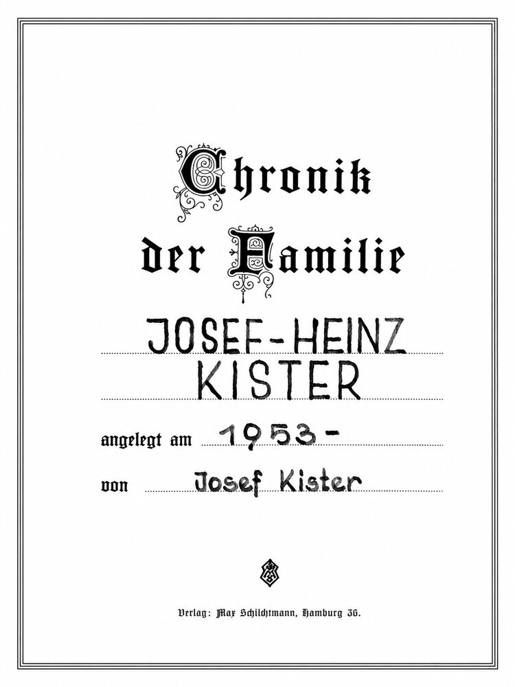
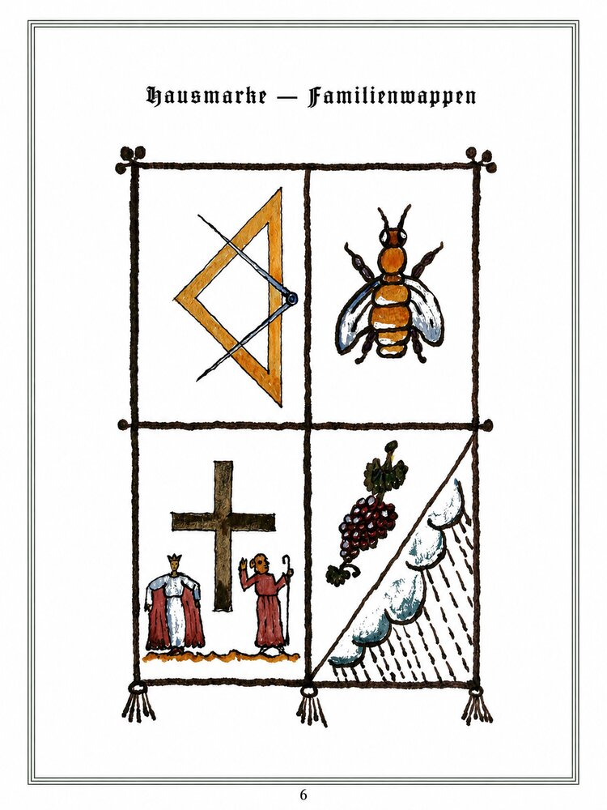
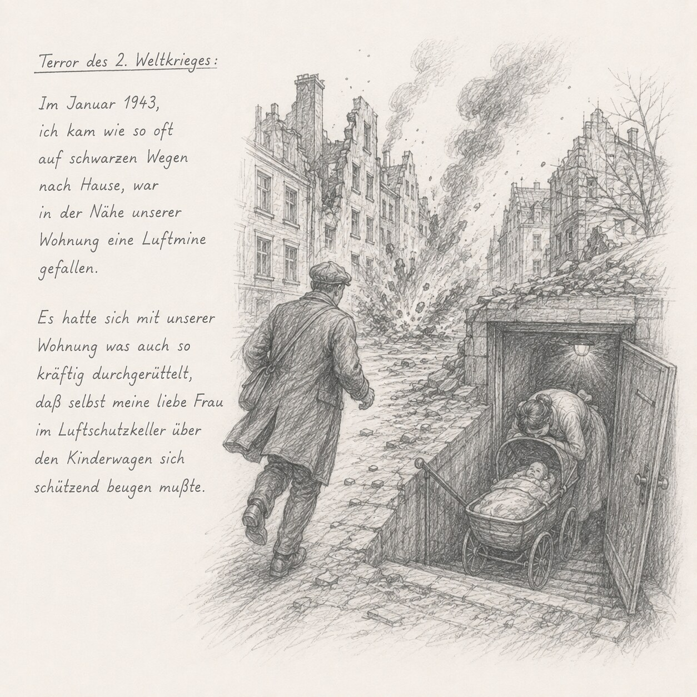
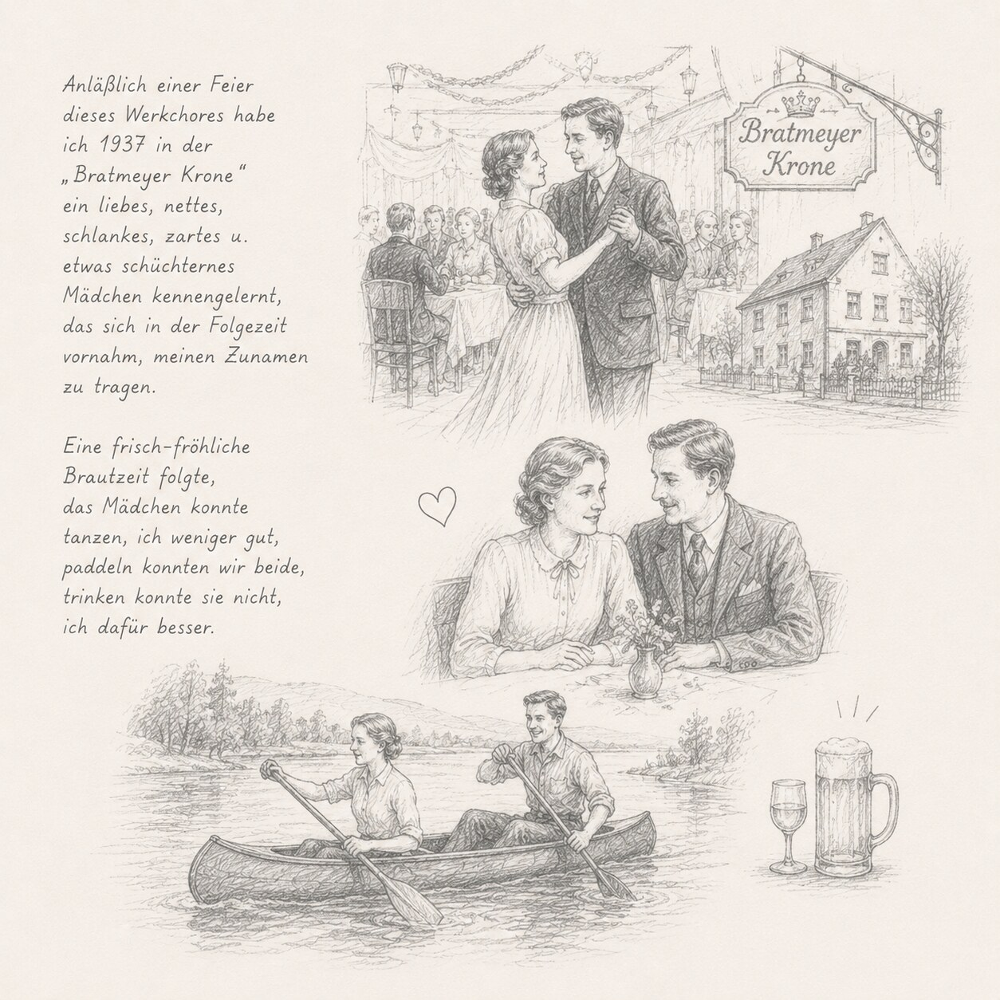
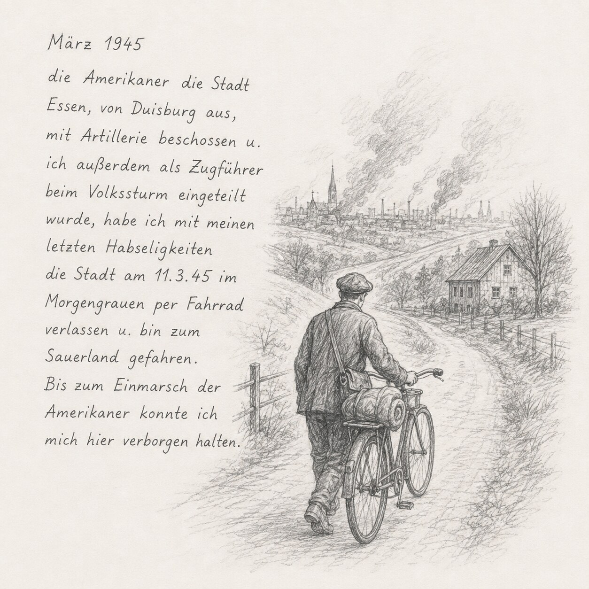
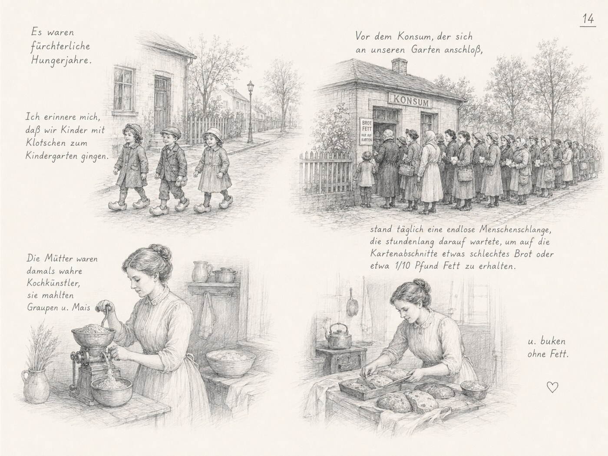
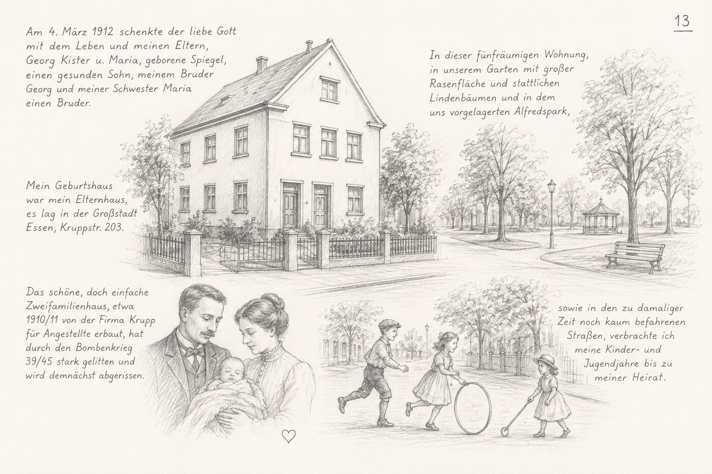
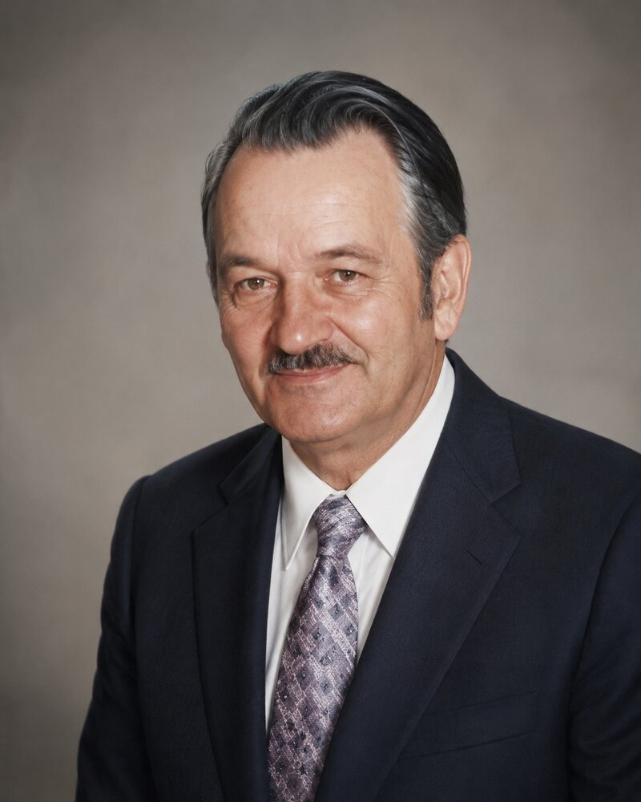
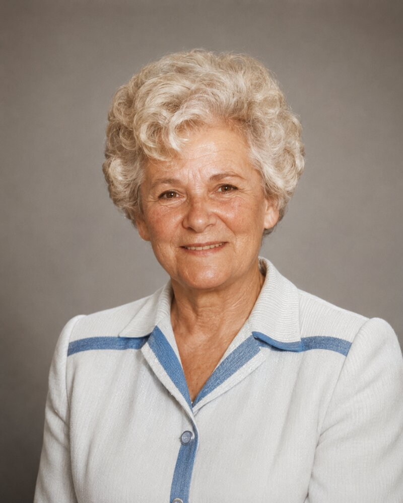

Dieses Familienbuch ist passwortgeschützt. Bitte Passwort eingeben.


Beschreibung des Wappens (von Josef Kister):
1. oberes Feld, links: meine Berufsembleme – Bauingenieur, Architekt.
2. oberes Feld, rechts: der Fleiß der Familie, dargestellt durch die fleißige Biene.
3. Feld, unten links: das Kreuz als Mittelpunkt unseres Daseins. Maria breit den Mantel aus, bitte für uns! Josef, mein Namens- u. Taufpatron [?], höre mit dem Ohr auf die Stimme des Herrn und gehe den vorgeschriebenen Weg, bitte für uns.
4. Feld, unten rechts: die Trauben als Sinnbild der Freude und Feste, die kalten Güsse, die wir im Laufe unseres Lebens, in Form von Kriegen, Hungerzeiten, Todesfälle und Krankheiten empfinden mußten – unser Kreuz!
| Geburt | Essen, 4.3.1912, 4.3 Uhr – Taufe 10.3.1912, Pfarrkirche St. Mariä Geburt, röm.-kath. |
|---|---|
| Beruf | Bauingenieur – Architekt |
| Wohnort | Essen |
| Tod | Essen, 10.2.1985 (Sonntag), 17:45 Uhr |
| Begräbnis | Essen, 15.2.1985 (Freitag), 10:30 Uhr |
| Geschwister | Georg (*13.3.1905 – †17.4.1960), Maria (*27.6.1906) |
Zusammengestellt aus den handschriftlichen Ahnentafeln des Originalbuches (Buchseiten 7–9 lt. Originalzählung). Einzelne Angaben auf dem gefalteten Original sind am Blattrand beschnitten oder schwer leserlich – diese sind mit [?] gekennzeichnet.
| Geburt | Essen-Borbeck, 29.9.1915 – Taufe 4.10.1915, Pfarrkirche St. Dionysius, röm.-kath. |
|---|---|
| Beruf | Kaufmännische Angestellte |
| Wohnort | Essen |
| Heirat | 8.9.1939 standesamtlich · 2.3.1940 kirchlich, Pfarrkirche zur Hl. Familie, Margarethenhöhe |
| Geschwister | Antonie (*6.1.1907 – †6.5.1933), Maria (*20.11.1911), Wilma (*13.7.1918), Karl-Heinz (*23.4.1921 – †1944 Rußland), Josef (*9.3.1926) |
| Name | Geburt | Taufe |
|---|---|---|
| Jörg-Günter | Remscheid, 27.3.1941 · † 6.7.1941 | 12.4.1941, St. Stephanus |
| Gisela | Essen, 10.8.1942 | 16.8.1942, Städt. Krankenhaus |
| Doris-Petronella | Essen, 31.8.1948 | 12.9.1948, Hl. Familie |
| Günter-Georg-Josef | Essen, 12.2.1950 | 26.2.1950, Hl. Familie |
Alle Kinder römisch-katholisch getauft.
Die handschriftliche Familienchronik, begonnen am 8. November 1953 von Josef Kister, fortgeführt bis in die 1980er Jahre – hier vollständig transkribiert von Buchseite 12 bis 98, dem Ende des Dokuments (Buchseiten 51–52 fehlen in der Originalzählung, vermutlich für Fotos reserviert). Ab Buchseite 69 kommen weitere Stimmen der Familie hinzu: Josefs Vater, seine Mutter und schließlich seine Frau Franziska erzählen in eigenen Worten, bis hin zur testamentarischen Schlussabrechnung von 1984. Unsichere Lesungen der Handschrift sind mit [?] gekennzeichnet.
Heute, am 8. November 1953, ist der zwölfte Todestag meines Vaters. An solchen Tagen hält man Rückblick in die Vergangenheit und wird gleichzeitig veranlaßt [?], seine Gedanken zu Papier zu bringen.
Ich, der Anleger dieser Chronik, Josef Kister, möchte dem Titel dieses Buches „Mein Leben und Wirken" eine ungezwungene Aufzeichnung folgen lassen.
Am 4. März 1912 schenkte der liebe Gott mit dem Leben und meinen Eltern, Georg Kister u. Maria, geborene Spiegel, einen gesunden Sohn, meinem Bruder Georg und meiner Schwester Maria einen Bruder. Mein Geburtshaus war mein Elternhaus, es lag in der Großstadt Essen, Kruppstr. 203. Meine Nachkommen werden das Haus, falls sie sich dafür interessieren, kaum noch vorfinden, das schöne, doch einfache Zweifamilienhaus, etwa 1910/11 von der Firma Krupp für Angestellte erbaut, hat durch den Bombenkrieg 39/45 stark gelitten und wird demnächst abgerissen.
In dieser fünfräumigen Wohnung, in unserem Garten mit großer Rasenfläche und stattlichen Lindenbäumen und in dem uns vorgelagerten Alfredspark, sowie in den zu damaliger Zeit noch kaum befahrenen Straßen, verbrachte ich meine Kinder- und Jugendjahre bis zu meiner Heirat.
Weit der Zeit vorausgeeilt, muß ich wieder einen Sprung zurück, zu meinem Tauftag machen. Ich wurde am 10.3.12 in der röm. kath. Pfarrkirche St. Mariä Geburt, in dem Glauben meiner Eltern getauft. Meine Taufpaten waren der Pflegevater meiner Mutter, Josef Mummdey aus Bochum, und die älteste Schwester meines Vaters, Therese Förster aus Essen. Die ersten Kindheitserinnerungen erstrecken sich auf den Besuch des Kindergartens im Rickerhaus an der Planckstr. Neben den üblichen Kinderspielen hatten wir auch eine dankenswerte Aufgabe zu erfüllen. Aus alten Stofflappen mußten wir Fäden zupfen, die dann als Watteersatz für die verwundeten Soldaten des Weltkrieges dienten.
Es waren fürchterliche Hungerjahre. Ich erinnere mich, daß wir Kinder mit Klotschen [Holzschuhe, ?] zum Kindergarten gingen. Vor dem Konsum, der sich an unseren Garten anschloß, stand täglich eine endlose Menschenschlange, die stundenlang darauf wartete, um auf die Kartenabschnitte [?] etwas schlechtes Brot oder etwa 1/10 Pfund Fett zu erhalten. Die Mütter waren damals wahre Kochkünstler, sie mahlten Graupen u. Mais u. buken ohne Fett.
Ab Ostern 1918 besuchte ich die Volksschule an der Kepplerstr. Unruhen gehörten in diesen Nachkriegsjahren zur Tagesordnung. Unsere Schule wurde zeitweilig von den Spartakisten, dann von der Polizei oder Reichswehr besetzt. Meine Eltern schickten mich im fünften Schuljahr zur Petrischule an der Petristraße, da diese Schule bisher von Unruhen verschont geblieben war. Am „Weißen Sonntag" 1922 empfing ich die erste hl. Kommunion in der St. Mariä Geburt-Kirche. Es war ein glücklicher Tag, denn Geschenke in der Form,
wie sie heute überbracht werden, fielen aus, es war eben nicht üblich und außerdem konnte man kaum etwas käuflich erwerben. 1923 besetzten die Franzosen das Ruhrgebiet und damit auch die Stadt Essen, um ihre Reparationsforderungen mit der Waffe durchzusetzen. Verhaftungen, Ausweisungen u. Verfolgung gehörten zum Tagesablauf.
Da eine innere Sicherheit durch die ausgeschalteten deutschen Behörden nicht gegeben war, wurden wir Kinder in die unbesetzten Gebiete evakuiert. Ich kam nach Schleswig-Holstein, zeitweilig in ein Kinderheim in Albersdorf, u. dann zu einem Kleinbauer in Tönning [?], an der Eidermündung. Hier habe ich die Nordsee erstmalig gesehen, bewundert u. gefürchtet. Erwähnen muß ich die inzwischen angelaufene Inflationszeit. Unsere Reichsmark wurde von Tag zu Tag, später von Stunde zu Stunde wertloser. Die meisten Menschen, die über ein Barvermögen verfügten, wurden bettelarm. Meine Eltern schickten mir z.Zt. etwa 100 000 Reichsmark, um 1 Pfd. Butter zu erhandeln. Als die Geldscheine
entwertet waren [?], konnte ich mir noch eine Briefmarke dafür kaufen. Nach einem Aufenthalt von 4 bis 5 Monaten kamen wir Kinder wieder zurück ins Elternhaus. Die Franzosen verließen uns im Jahre 1925, für unsere Generation brach ein neues Zeitalter an. Was wir bisher noch garnicht gesehen hatten, wie Apfelsinen, Bananen, Kokosnüsse oder andere Nüsse und solche Dinge, die wir nur spärlich oder als Ersatz kannten, wie gutes Brot, ausreichend Fett u. Fleisch u. Bekleidung, das war nun reichlich vorhanden. Abschließend zu diesem Zeitabschnitt kann ich sagen, es war, abgesehen von meinen ersten Kleinkindjahren, ein sehr dürftiger [?] Lebensabschnitt. Unsere Eltern haben jedoch alles getan, um uns über diese Zeit zu bringen. Wir Kinder haben diese Not u. Gefahr weniger erkannt, wir schätzten kleine Gaben, eine ländliche Gemeinschaft u. freuten uns in der Natur. Daß ich einem Förster in engster [?] ... und jeden angenehmen Baum oder manches Feld [?] bestiegen habe und auch sonstige Streiche ausgeheckt habe,
soll nicht verschwiegen werden. Auf religiöser Ebene habe ich im Knabenchor des Kirchenchors gesungen und war auch zeitweilig Meßdiener.
Nach meiner Schulentlassung, ich war ein guter Zeichner, kam ich 1926 in die Zeichnerlehre bei dem damals sehr geschätzten Architekten [Vorname unleserlich] Klasse [?]. Sein Atelier befand sich in dem Bürohaus „Glückauf" an der Friedrichstr. Heute kennen wir nur noch die durchgehende Arbeitszeit, die während des zweiten Weltkrieges allgemein eingeführt wurde. In meiner Lehrzeit wurde von 8 bis 12.30 Uhr u. von 14.30 bis 19 Uhr gearbeitet. Als jüngster Lehrjunge mußte ich vor Beginn der Arbeitszeit den Büroschlüssel aus der Wohnung meines Chefs im Dornwäldchen [?] holen und nach Beendigung derselben auch wieder dort abgeben. Diese Wege wurden nicht etwa per Straßenbahn, sondern zu Fuß erledigt. Gegenüber der Vergangenheit, in der ein Lehrling noch Lehrgeld zahlen mußte, war es schon ein Fortschritt, daß mir mein Chef ein Taschengeld von RM 10,–/Monat im ersten Lehrjahr
u. RM 20,– bzw. RM 30,– im zweiten bzw. dritten Jahr auszahlte. Dieses fürstliche Gehalt habe ich selbstverständlich meinen Eltern abgegeben und erhielt ein ebenso fürstliches Taschengeld in Höhe von RM 1,– pro Woche im ersten Lehrjahr, RM 2,– bzw. 3,– pro Woche im 2. bzw. 3. Jahr. Mein zweiter Chef hatte keine technische Vorbildung genossen, um so mehr war er ein ausgezeichneter, wenn auch eigenwilliger Künstler. Er vermittelte mir die Grundlage der Gestaltungslehre und der Farbenharmonie. Besonders ersprießlich war die Lehrzeit nicht; wir Lehrlinge waren mehr Mitläufer, da uns keiner die notwendigen technischen Anweisungen geben konnte. Während meiner Lehrzeit schloß ich mich, in Ermangelung einer anderen mit passenden Berufsvereinigung [?], dem K.K.V. (Kath. Kaufmännischer Verein) an, in dessen Reihen auch mein Bruder, der den kaufmännischen Beruf gewählt hatte, stand. Das Programm des K.K.V. war vielseitig ausgerichtet, Berufsvorträge, gesellige Veranstaltungen, Wanderungen u. christliche Übungen waren Kernpunkte. So manche günstige
Wanderung in der näheren Umgebung, besonders auch die mehrtägigen Wanderungen, ich denke da an eine 8-tägige Tour quer durch den Harz, sind mir bis heute unvergessen.
Nach meiner Lehrzeit begann für mich ein neuer Lebensabschnitt. Als Voraussetzung für den Besuch einer Staatsbauschule mußte ich 1½ Jahr auf Baustellen fachlich gearbeitet haben. Im Frühjahr 1929 wurde in Essen, die später so berühmt gewordene „Gruga" (Große Ruhrländische Gartenbau-Ausstellung) eröffnet. Mein Chef, Architekt Klasse, hatte den Auftrag für diese Ausstellung einige Gebäude zu entwerfen u. die Bauleitung zu übernehmen. Für mich war es sehr interessant, erst im Büro zeichnerisch u. dann auf der Baustelle praktisch am Aufbau dieser Bauten mitwirken zu können. Im Laufe meiner praktischen Tätigkeit habe ich im Tiefbau (Straßenbau) u. im Siedlungsbau gearbeitet. Wenn ich eine Baustelle von damals u. heute betrachte, dann sind doch erhebliche Veränderungen festzustellen. Die Leute vom Bau waren damals
echte [Handwerker, ?], sie verstanden ihr Fach, besaßen einen Berufsstolz und leisteten körperlich mehr. Im Rohbau kannte man nur den Ziegelstein u. die Holzbalkendecke, gegenüber kennt man heute meist nur den Formstein u. die Stahlbetondecke. Mörtel u. Beton wurden damals nur im Handbetrieb bereitet, u. an Stelle des Aufzugs, den wir heute an jeder Baustelle sehen, trugen die Mörtel- u. Steinträger ihre erheblichen Lasten bis ins oberste Geschoß.
Einige technische Daten werden meinen Nachkommen die Entwicklung in diesem Zeitraum vor Augen führen. Die Gasbeleuchtung in den Häusern wurde erst 1925 durch elektrische Beleuchtung abgelöst. Das wirklich gebrauchsfähige Personenauto kam 1924/25 in den Handel u. das Radiogerät erst 1926/27. Das Fernsehgerät konnte man im Bundesgebiet 1952 erstmalig bewundern, am 15.10.1954 habe ich mir selbst solch einen Wunderapparat zugelegt, Bildgröße 22×29 cm.
Im Herbst 1930 begann mein Studium auf der hiesigen Staatsbauschule, die in Fachkreisen sehr geschätzt, bei den Studenten aber wegen der hohen Anforderungen
u. der strengen Hausordnung gefürchtet war. In klostermäßiger Abgeschiedenheit von aller Umwelt habe ich 2½ Jahre = 5 Semester gebüffelt, u. konnte Ostern 1933 mein Bauingenieurexamen bestehen. Von den 120 Studierenden, die mit das erste Semester begonnen hatten, haben nur 22 das Ziel erreicht. Unser Ziel war aber nicht nur unser Patent [Examen], sondern eine passende Stelle im Baugewerbe zu finden. Betrübt mußten wir jungen Bauingenieure feststellen, daß keiner auf uns gewartet hatte. In diesem Zeitraum der Regierungskrisen, der laufenden Konkurseröffnungen, der wirtschaftlichen, politischen und kulturellen Skandale, hatte Deutschland 8 Millionen Erwerbslose. Während wir Studenten unsere Examen bauten, kam Hitler – über dessen rühmliche und unrühmliche Geschichte meine Nachkommen sich Nachschlagewerke verschaffen können [?] – nach vielen Machtkämpfen an die Regierungsgewalt. Ein Hoffnungsschimmer stieg am Horizont für alle Arbeitssuchenden auf, der später mehr erfüllte, als dem Einzelnen lieb war. Damit ich
nicht in das Heer der Arbeitslosen untertauchte, bot mir mein Bruder Georg, der 1930 eine Papiergroßhandlung gegründet hatte, den Posten eines Reisenden an. Nach anfänglichen Erfolgen merkte ich doch, daß ich wenig Eignung für diese kaufmännische Tätigkeit hatte. Während mein Bruder zu seinen Kunden kam u. siegte [?], war mir der Kundenbesuch eine Last. Ich habe das Angebot meines Bruders, seinen Lieferwagen zu fahren, dankbar angenommen, war doch damit etwas verbunden, was mit Technik zu tun hatte. Auf Grund meiner vielen Bewerbungsschreiben, konnte ich endlich am 2. Januar 1934 meine erste feste Stelle bei dem Architekten Hans Förner [?], Essen-Rüttenscheid, Waldblick 12, antreten. Nach anfänglicher Eingewöhnungszeit [?] war ich in der Folge mit im Außendienst beschäftigt. Förner hatte erkannt, daß ich eine Baustelle organisatorisch gut einrichten u. mit allen Bauhandwerkern, Behörden u. Handwerkern fachlich u. gerecht umgehen konnte. Der arbeitsmäßige Aufschwung, den Deutschland in den Jahren 1934/36 erlebte, gab mir schon früh den Mut, mich in
absehbarer Zeit als freischaffender Architekt zu betätigen, zumal ich bei Förner, der sich nur um den Auftragseingang kümmerte, ein selbständiges Arbeiten gewohnt war. Als ich im Juni 1936 bei der Firma Hochtief A.G. eine Stelle als Bauführer antrat, hatte ich die Absicht, den Betrieb eines Baugeschäftes für 1 bis 2 Jahre zu studieren, um mich danach als Architekt zu betätigen. Aus diesem Vorhaben ist leider, oder Gott weiß wofür es besser war, nichts geworden, da kurz nach meiner Einstellung von der Regierung ein Kündigungsverbot aus wehrwirtschaftlichen Gründen erlassen wurde. Bis zum Kriegsausbruch 1939 war ich für Hochtief als Bauführer in Breitscheid [?], Westerwald (1936), im Winter 1938/39 am Westwall in Pirmasens/Saarbrücken, und in der übrigen Zeit im Zentralbüro in Essen, als Kalkulator und Statiker beschäftigt. In diesen Vorkriegsjahren wurde viel gearbeitet, aber auch gutes Geld verdient u. die fröhlichen Stunden in der Familie u. in Freundeskreisen waren nicht selten. In meiner Freizeit habe ich mich politisch nicht binden lassen, es war
nicht immer leicht, aber entsprach der demokratischen Denkungsart unserer Familie. Dagegen habe ich dem Sport gehuldigt, ich war Florettfechter in dem Fechtclub „Waffenbrüderschaft" und von 1933 bis 1939 eifriger Paddler auf der Ruhr u. dem Baldeneysee. Auch schöne Reisen konnten mich begeistern, so bin ich 1937 zum „Berchtesgadener Land" gefahren und habe so manchen Berg bestiegen, 1938 bin ich mit meinen Eltern nach Berlin gefahren u. haben dort alle Sehenswürdigkeiten besichtigt u. ebenfalls 1938 mit den Eltern nach Cuxhaven, Hamburg u. Helgoland. Vorübergehend habe ich auch dem Werkchor der Fa. Hochtief, meine Baßstimme geliehen.
Anläßlich einer Feier dieses Werkchores habe ich 1937 in der „Bratmeyer Krone" [?] ein liebes, nettes, schlankes, zartes u. etwas schüchternes Mädchen kennengelernt, das sich in der Folgezeit vornahm, meinen Zunamen zu tragen. Eine frisch-fröhliche Brautzeit folgte, das Mädchen konnte tanzen, ich weniger gut, paddeln konnten wir beide, trinken konnte sie nicht, ich dafür besser. Sylvester 1938
haben wir uns verlobt, ich kam für einige Tage vom Westwall heim, es war ein fröhlicher Tag in der Adventzeit 39 [?], im Hause meiner Schwiegereltern. Unsere Hochzeit haben wir für das Frühjahr 1940 festgelegt. Wegen der drohenden Kriegsgefahr u. der damit möglichen frühen Einberufung haben wir die standesamtliche Trauung auf den 8.9.1939 vorverlegt. Eine schlichte Feier, 8 Tage nach Kriegsbeginn, würdigte dieses für uns historische Ereignis u. bedeutete den Krieg, der uns mit der ganzen Welt ungeahnte Opfer u. Strapazen aufbürden sollte. Der Kriegsausbruch verursachte schlagartige Veränderungen im privaten u. öffentl. Leben. Für Lebensmittel u. Kleidung gab es sofort Karten, für Mobiliar u. Hausgeräte wurden auf Antrag Bezugscheine ausgestellt, ebenso für Seife, Benzin, Kohle, Holz, überhaupt für alles. Jede Lichtquelle mußte nach außen verdunkelt werden, 5½ Jahre haben wir im Dunkeln leben müssen. Jeder entbehrliche Mann wurde eingezogen u. kinderlose Frauen wurden dienstverpflichtet. Bald dröhnten die ersten feindlichen Flugzeuge am Himmel, Sirenen
flammten auf u. die Flak schoß so wild, daß die Granatsplitter uns nur so um die Ohren [?] regneten. Die Sirenen heulten ihr fürchterliches Lied und die Menschen hasteten mit ihrer wichtigsten Habe zu den wenigen Bunkern. Es begann die Zeit, in der man um sein Leben kämpfen mußte, man mußte schweigen können, man mußte praktisch sein, man mußte organisieren, d.h. Lebensmittel [?] besorgen können. Zu Beginn dieser Zeit, am 2.3.1940, haben meine liebe Frau u. ich vor dem Altar Gottes, in der damals noch kleinen Pfarrkirche zur Hl. Familie auf der Margarethenhöhe, uns das Ja zum Ehestand gegeben. Dieser fröhliche Tag wurde mit allen uns damals noch zur Verfügung stehenden Mitteln gefeiert. Es war gleichzeitig das letzte frohe Zusammensein eines großen Familienkreises, die traditionelle Hochzeitsreise hatte das junge Paar aus kriegsbedingten Gründen bereits einige Monate früher nach Kärnten u. Venedig gemacht [?]. Jetzt nahmen wir unser Bündel u. zogen in die Vorstadt auf dem Berge, nach Remscheid, der Stadt mit dem größten Export-
aufkommen nach Übersee. In Remscheid war ich seit Januar 1940 für meine Firma tätig. Ich hatte den Auftrag, ein großes Werkstättengebäude an der Moltkestraße [?] für die „Bergische Stahlindustrie", sowie Fallenkeller [?], Hammerfundamente u. Luftschutzstollen für das benachbarte Werk der „Deutschen Edelstahlwerke" fertigzustellen. Bei einer recht liebenswerten Dame, die in der Blumenstr. ein kleines Schülätchen [?] führte, Frau Selma Kall und ihrer lieben Hausdame, Frl. Lene Richebächer [?], hatten wir zwei möblierte Zimmer gemietet. In unserer Heimatstadt Essen, bekamen wir durch die Vermittlung meines Bruders, in der Schnoortstr. 20 [?] eine 3-räumige Wohnung, die wir aber nur zum Wochenende bewohnten. In Remscheid haben wir trotz des Krieges oder wegen des Krieges manch fröhliche, aber auch traurige Stunde verbringen müssen. Am 27.3.1941 wurde unser Sohn Jörg-Günter im Krankenhaus in Remscheid geboren. Es war ein kräftiges Kind, wir waren alle stolz darauf, besonders mein Vater, da Jörg der erste männliche Erbe war. Leider hat uns der liebe Gott unseren kräftigen, gesunden Jungen am 6.7.1941 wieder genommen.
Nach einer plötzlichen Erkrankung, vermutlich durch eine Infektion im Luftschutzkeller, ist unser Junge im Krankenhaus gestorben. Er ruht auf dem kath. Friedhof in Remscheid, sein Gräbchen wird heute, nach 13 Jahren, immer noch besucht u. gepflegt. Ein weiteres trauriges Ereignis erschütterte uns am 8.11.1941. Mein lieber Vater, zu dessen 67. Geburtstag wir nach Essen gekommen waren, verstarb plötzlich infolge Herzschlag. Er ruht auf dem Südwestfriedhof in Essen.
Nach Fertigstellung aller mir aufgetragenen Arbeiten war es meiner Firma nicht möglich, mich weiter zu beschäftigen. Mein Jahrgang war bei der Wehrmacht sehr gefragt u. so wurde ich am 26. März 1942 zu den Pionieren nach Köln-Westhoven eingezogen. Meine liebe Frau war nun in unserer schön eingerichteten Wohnung in der Schnoortstr. allein geblieben u. hatte das zweifelhafte Vergnügen, jede Nacht den Luftschutzkeller zu besuchen. Von Monat zu Monat steigerte sich die Wucht der Fliegerangriffe u. Millionen Ehegatten, Eltern u. Kinder bangten gegenseitig um das Leben ihrer Lieben. Ich hatte
inzwischen in Köln eine übertriebene harte Ausbildung genossen, ich drängte mich aber keineswegs zum Heldentum. Wie sich unter Gleichgesinnten, die die aussichtslose Wahnsinnspolitik unserer [Übermacht-?]Regierung nicht unterstützten, kämpfte auch ich nur um mein Leben. Mit List u. Tücke hatte ich bei einer Landesschützeneinheit in Gladbeck unterkommen können. Als ich am 10. August 1942 zum Spieß [Kompaniefeldwebel] gerufen wurde, erfuhr ich durch den Anruf meiner Frau, die im Städt. Krankenhaus in Essen lag, daß uns der liebe Gott ein gesundes Mädchen geschenkt hatte, dem wir den Namen Gisela gaben. Im Januar 1943, ich kam wie so oft auf schwarzen [unerlaubten, ?] Wegen nach Hause, war in der Nähe unserer Wohnung eine Luftmine gefallen. Es hatte sich [?] mit unserer Wohnung was [?] auch so kräftig durchgerüttelt, daß selbst meine liebe Frau im Luftschutzkeller über den Kinderwagen [sich schützend beugen mußte, ?]. Wir haben uns kurz entschlossen, zu einer bekannten Familie in Fretter im Sauerland Verbindung aufgenommen u. konnten noch im Januar nach dort umziehen. Das Haus in der Schnoortstr. ist später
vollständig zerstört worden. Im September 1943 wurde ich auf Antrag meiner Firma aus der Wehrmacht entlassen. Ich war zuletzt Gefreiter beim Stab einer Landesschützeneinheit in Recklinghausen gewesen. In Essen übernahm ich eine Bautruppe von 400 Mann, um damit Kriegsschäden an den Werkhallen der Fa. Krupp zu beseitigen. Ich wohnte in der Wohnung meines Bruders, und als diese zerstört wurde, in der Wohnung meiner Schwiegereltern. Es war ein hartes [?] Dasein, alle meine Angehörigen, abgesehen von meinem Bruder u. allen Schwägern, die bei der Wehrmacht dienten, waren ins Sauerland evakuiert. Ich hauste allein in den Wohnungen, putzte u. kochte. Nach jedem Angriff kam ich dazu, das Dach neu zu decken, Fenster u. Türen wieder anzuschlagen u. die Schuttmassen zu entfernen [?]. In manchen Nächten gab es 4, 5 oder 6× Alarm, die Menschen haben in den letzten 2 Jahren nur noch mit ihren Kleidern im Bett liegen können. Das elektrische Licht u. das Wasser fielen auch öfter aus, wir haben uns mit Petroleum oder Karbid geholfen u. das Wasser holten wir von einer Quelle. Als am
Über 10 000 Menschen waren durch Fliegerangriffe ums Leben gekommen u. ⅔ aller Häuser waren zerstört oder stark beschädigt. Der Lebenskampf wurde jetzt nicht mehr blutig ausgetragen, aber wer über Wasser bleiben wollte, der mußte „organisieren" können. Der Schwarzhandel blühte, u. die Bauern nahmen den ausgebombten Städtern die letzte Habe für Speck, Eier u. Kartoffeln. Mein Bruder hatte auf dem Grundstück seiner ausgebrannten Wohnung einen großen Garten, den haben wir gemeinsam bearbeitet, geerntet haben zwar öfter die üblichen Nachtgespenster [Diebe, ?]. Mit vereinten Kräften haben wir eine Etage des ausgebrannten Hauses wieder aufgebaut u. so konnte mein Bruder mit Familie kurz vor Weihnachten 1946 seine frühere Wohnung wieder beziehen. Angesteckt von dem Baugedanken, habe auch ich mich um den Ausbau einer Ruine bemüht. Auf der so schön gelegenen Margarethenhöhe wurde mir diese zugewiesen. Es stand zwar nur das Kellergeschoß, aber mit Hilfe meiner Firma konnte ich das Haus unter denkbar schwierigsten Umständen wieder aufbauen u. bereits am 27.9.47 beziehen.
In der Wohnung Steinkausenstr. 45 hatte ich bereits meine Mutter, die während des Krieges in einem Kloster in Giershagen [?] gut aufgehoben war, wieder in die heimatliche Wohngemeinschaft aufnehmen können. Nun wohnten wir, d.h. meine Frau, unsere Tochter Gisela, meine Mutter u. ich, in einem Einfamilienhaus in der Winkelstr. 19 und fühlten uns wie die Könige. Die Lebensmittel-, Wäsche- u. Kleiderzuteilung, die wir in der Nachkriegszeit bis zum Tag der Währungsumstellung am 20.6.48 erhielten, war immer noch rationiert u. denkbar knapp. Eine willkommene, oftmals rettende Beigabe erhielten wir ab 1946 durch die Verwandten meiner Frau aus den U.S.A. Jeden Monat erhielten wir ein Paket mit hochwertigen Lebensmitteln u. getragenen Kleidungsstücken von diesen hochherzigen Spendern. Aber nicht genug mit der einen Spende, diese lieben Verwandten drängten darauf, daß wir nach dort auswandern sollten. Sie boten uns eine möbl. Wohnung an u. schickten sogar die Bürgschaftspapiere. Wir haben das Angebot dankbar angenommen u. bemühten uns bei den
amerikanischen Behörden um die Einwanderungsgenehmigung. Aber dann traten einige Umstände ein, die unser Vorhaben ins Wasser fallen ließen. Die U.S.A.-Behörde hatte viel Zeit, sie vertröstete uns noch einige Jahre u. dann wollten wir nicht mehr. Inzwischen war 1948, am 31. August, unser Töchterchen Doris-Petronella geboren worden. Den zweiten Namen Petronella hat sie von ihrer Patentante Nelly Schmitz aus Chicago, U.S.A. Am 12. Februar 1950 schenkte uns der liebe Gott unseren Sohn Günter-Georg-Josef. Mit dieser Masseneinwanderung [?] haben selbst unsere lieben Einlader nicht gerechnet. Außerdem wurde z.Zt. jeder männliche Einwanderer sofort zum Waffeneinsatz nach Korea geschickt, u. — außerdem ging es uns in Deutschland inzwischen sehr gut. Mögen unsere lieben Nachkommen erst die Köpfe mal schütteln, wie man's macht, es ist immer verkehrt.
Aber nun zurück zu unserem Wohnsitz auf der Margarethenhöhe, wir fühlten uns sehr wohl und langsam kehrten normale Verhältnisse zurück. Der Pfarrer der kath. Kirche zur „Hl. Familie", Pfarrer Rahmen [?], forderte mich
1948 auf, einen Entwurf für die Errichtung der Notkirche zu machen. Mein Entwurf wurde allseitig begrüßt, und wenige Tage später habe ich mit sieben ideal gesinnten Männern zum Spaten u. zur Kelle gegriffen. Zum Christkönigsfest 1948 konnte die errichtete Notkirche eingeweiht werden. Seit Frühjahr 1948 war ich auch aktiver Sänger im Kirchenchor u. ab 1949 dessen Schriftführer. In den Kirchenvorstand wurde ich im Herbst 1948 gewählt u. habe meinen Teil zum Ausbau der jetzt bestehenden großen Pfarrkirche beigetragen.
Bei meiner Firma, der Hochtief A.G., bin ich seit Kriegsende als Bauführer u. Bauleiter vieler Bauten im zerstörten Stadtgebiet eingesetzt worden. Meine Befähigung zur Architektur veranlaßte meine Firma, mir 1949 den Auftrag zum Bau eines neuen Verwaltungsgebäudes in der Recklinghauser Str. 57 zu geben. Im August 1950 wurde der Bau bezogen u. ist der repräsentative Sitz der Zentrale meiner Firma. In der Folgezeit habe ich einige Entwürfe zum Neubau oder Umbau von Wohnhäusern für unsere Direktoren u. Oberbeamten gemacht, die sämtlich zur Ausführung kamen. In dieser Zeit
reifte auch bei mir der Gedanke, ein eigenes Wohnhaus mit Garten zu besitzen u. meiner Familie damit eine Sicherheit zu geben. Mit großzügiger Unterstützung meiner Firma habe ich dann 1951 unser jetziges Wohnhaus in Essen-Bredeney, Kampstr. 45 [?], nach eigenen Plänen aufgebaut. Meine Mittel waren zwar sehr gering, und auch die Bauordnung ließ mir eine starke Begrenzung [?] zu, aber ich hatte den Mut, meinen Wunschtraum, ein eigenes Heim zu besitzen u. den Kindern ein schönes Elternhaus zu geben, Wirklichkeit werden zu lassen. Am 25. September 1951 haben wir uns mit einem weinenden Auge von der schönen Margarethenhöhe verabschiedet u. sind mit lachenden Augen in unser Eigentum eingezogen. Der Geburtstag meiner lb. Frau, am 29.9.51, war gleichzeitig der Einweihungs- u. Namenstag [?] des Hauses. Es wurde von Pfarrer Rahmen [?] gesegnet, u. wir haben den lieben Gott gebeten, daß das Haus u. alle seine Bewohner glücklich u. gesund bleiben. Um meiner lieben Frau für all ihre Arbeit, Sorge u. Opfer, die sie sich zum Wohle der Familie aufgebürdet hat, die richtige Würdigung zu geben, haben wir das Haus
(am Seitenrand nachträglich vermerkt: 20.10.54 / 1.2.77)
auf den Namen Franziska getauft.
Der vorstehende Lebensablauf, den am 20.10.54 vorläufig endet, ist, ich will es heute ehrlich gestehen, in einer inneren Hast von mir geschrieben worden. In den letzten Wochen dieser Schreibarbeit hatte ich das Gefühl, daß meine Lebenstage gezählt seien.
Was ist zwischenzeitlich passiert? Am 1.3.1954 hatte ich aus einem heiteren Wohlbefinden unerwartet [?] einen nervlichen und damit verbundenen körperlichen Zusammenbruch erlebt. Ursache: eine viele Jahre dauernde Tag- und Nachtarbeit, ein jahrelanger Verzicht auf den mir zustehenden Urlaub, dazwischen viele Trinkgelage und übermäßiger Rauchergenuß.
Ich habe fast 7 Monate flach
gelegen, ein Kreislaufkollaps löste den anderen ab. Übermäßige Geräuschempfindlichkeit, Herzrhythmusstörungen, Platzangst usw. Die Ärzte gingen bei uns ein und aus, und alle machten ein bedenkliches Gesicht.
Ich wünsche keinem meiner Nachkommenschaft, daß sie diesen Zustand erleben.
In der Folgezeit, und zwar immer nur im Dämmerzustand durch Einnahme von barbitur- oder bromhaltigen Medikamenten, habe ich meinen Dienst erst stundenweise und später voll ausgeübt. Bei Überanstrengungen, Aufregungen, je nach Wetterlage usw. sind noch viele Ausfallzeiten und Krankenhausbehandlungen eingetreten.
Ich habe später meinen Beruf wieder voll ausüben können, allerdings nur unter Beihilfe [?] etlicher genannter
Medikamente. Jahrelang habe ich keinen Alkohol getrunken, nicht geraucht, aber ohne Beruhigungstabletten konnte ich nicht leben.
Und hier kommt der große Fehler der Ärzteschaft: sie haben mir diese Medikamente in Unmengen verschrieben, und keiner prüfte oder sagte mir die Folgeerscheinungen an. Anfang Januar 1968 bekam ich eine Gelbsucht, spätere Untersuchungen in der Poliklinik in Mölln [?], durch Bauchspiegelungen und Punktierungen, ergaben, daß ich eine durch Medikamente zerfressene Leber, also eine Leberzirrhose, hatte. Ich wurde sofort erwerbsunfähig geschrieben.
Die nachstehend aufgeführten Kurzberichte geben eine Übersicht, daß man, allerdings bei strengster Lebenshaltung, das Leben erhalten kann, vielleicht sogar in einer
sehr aufgeklärten Art.
Man macht Bilanz über sein Leben, sein Schaffen, über den Sinn des Lebens.
Aus diesem Grunde habe ich diese Chronik angelegt.
Ein Album über meine Landschaften habe ich zusammengestellt.
Meinen Geist habe ich geschult auf den Gebieten der Archäologie, der Urgeschichte, der Mythologie und Religionen der Völker, der Biologie, der Medizin, der Astronomie, der Geschichte der Antike, des Altertums.
Daraus sind die folgenden Bände entstanden: 1. Der dreieinige Gott lebt doch! 2. Christus und seine Kirche oder Kirchen! 3. Rückblick in die Urzeit bis zur Gegenwart! 4. Alt-Griechenland, Quelle der Kultur! 5. Denkwürdige Tatsachen der Schöpfung!
(Ab hier maschinengeschriebene chronologische Ereignisliste, Jahr für Jahr:)
1954 - 1.3. Nervenzusammenbruch, Kreislaufkollaps, Herzschwäche. - 6.4. bis 6.5. Kneippkur in Bad Camberg. - 6.7. bis 3.8. Kur in Bad Orb. - 15.10. 1. Fernsehapparat angeschafft.
1955 - 12.5. bis 3.6. Kur in Bad Schönmünzach / Schwarzwald. - 16.8. bis 28.8. Fränzi, Gisela und Doris nach Cuxhaven.
1956 - 12.6. bis 16.6. Amerikaner: Rudy, Nelli, Onkel Frank und Kinder bei uns zu Gast. - 21.7. Filmgerät und Projektor angeschafft. - 15.8. bis 30.8. Urlaub in Weitefeld / Westerwald. - 9.10. 2. Fernsehapparat gekauft.
1957 - 12.8. bis 28.8. Urlaub in Kroppach / Westerwald.
1958 - 17.2. bis 8.5. Garagenbau, Wintergarten, Balkon gebaut. - 1.8. bis 3.8. Bauführerfahrt zur Weltausstellung nach Brüssel. - 18.8. bis 5.9. Urlaub in Antfeld / Sauerland.
1959 - 9.4. Telefon angelegt. - 11.7. bis 25.7. Urlaubsfahrt nach Oberteisendorf/Bayern. Reichenhall, Berchtesgaden, Chiemsee, Königssee, Zauberwald, Hintersee, Salzburg-Hellbrunn.
1960 - 4.7. 1. Volkswagen angeschafft. - 8.7. bis 9.7. Bauführerfahrt nach Amsterdam, Noordwijk am Zee, Rotterdam. - 9.8. bis 13.8. Urlaub in Fretter / Sauerland. - 2.9. Fränzi bekommt den Führerschein.
1961 - 24.5. Constructa-Waschmaschine gekauft. - 3.6. 25 Jahre bei Hochtief, wegen Krankheit fand die Feier im Hause Kamperfeld statt. - 28.7. bis 24.8. Urlaub in Röth-Schönegründ / Schwarzwald. Bodensee, durch die Randgebiete der Schweiz, Konstanz, Insel Mainau, Meersburg, Kirche Birnau, Überlingen, Rheinfall, Südschwarzwald.
1962 - 28.4. bis 18.5. Herzanfall, Krankenhaus Huyssenstift. - 21.6. bis 24.6. Bauführerfahrt nach Darmstadt, Bergstraße, Michelstadt, Erbach, Amorbach, Miltenberg, Bad Mergentheim, Creglingen, Rothenburg o.T., Heilbronn, Bad Wimpfen, Heidelberg, Mainz. - 2.8. bis 18.8. Fränzi und Doris per Volkswagen, Günter und Vater per Omnibus nach Lenggries/Bayern. Bergbahn zum Brauneck (1540 m), München, Tegernsee, Rottach-Egern, Wiessee, zur Eng, Achensee, Zillertal, Garmisch, Mittenwald, Kloster Ettal, Oberammergau, Sylvensteinsee.
1963 - 25.7. bis 9.8. Urlaub in Lenggries.
1964 - 19.2. bis 27.2. Spitzbodenzimmer ausgebaut. - 1.8. Gisela-Herbert, Hochzeit. - 17.8. bis 30.8. Urlaub in Lechbruck/Allgäu, Klein Walsertal, Füssen, Schloss Linderhof, Oberstdorf.
1965 - 26.2. 2. Volkswagen gekauft (DM 5.180,00). - 2.3. Silberne Hochzeit. - 29.3. bis 26.4. Kur in Bad Salzuflen. - 28.5. bis 30.5. Bauführerfahrt: Dorsten, Burgsteinfurt, Lengerich, Bad Rothenfelde, Schmedeshausen. - 25.6. Tante Nelli aus USA hier. - 9.8. bis 24.8. Urlaub in Cuxhaven, Hamburg.
1966 - 18.2. Herbert/Gisela beziehen Wohnung Overbeckstr. 28. - 30.3. Nicola-Martina geboren. - 16.5./17.5. Trauung: Doris-Jansen. - 31.10. Karin-Sabina geboren.
1967 - 2.8. bis 17.8. Urlaub in Lenggries. - 16.8. Oma Kister ins Krupp-Krankenhaus. - 1.9. Oma Kister, 85 Jahre alt, gestorben.
1968 - 29.2. bis 13.3. Leberkrank, danach wieder Halbtagsdienst. - 30.7. bis 30.10. 1. Kur in der BfA-Kurklinik in Mölln. Bauchspiegelung, Punktierung: Leberzirrhose. - 16.9. bis 27.9. Fränzi in Mölln. - 6.8. bis 20.8. Fränzi und Günter in Cuxhaven, besuchen mich am 10./11.8. in Mölln.
(Datumsangaben am linken Rand teils überlappend/schwer leserlich, [?] wo unsicher)
1969 - 29.4. bis 24.6. 2. Kur in Mölln, Rentenantrag gestellt. - 30.4. [?] Herbert/Gisela nach Kupferdreh gezogen. - 25.6. [?] Beginn der Erwerbsunfähigkeitsrente. - 14.9. bis 28.9. Fränzi, Gisela, Nicola und Karin nach Mamaia in Rumänien.
1970 - 8.7. bis 19.8. 3. Kur in Mölln. - 22.8. bis 1.9. 1. Urlaub in Schwarzenau / Sauerland.
1971 - 18.1. Rüdiger-Mark geboren. - 20.1. 3. Fernsehapparat gekauft. - 10.2. 3. Volkswagen gekauft, Standard DM 5.250,–. Günter übernimmt den 2. VW mit km 82175, der noch bis zum 20.12.76 in Betrieb war. - 24.2. Außenfront und Wintergarten verkleidet, Terrasse plattiert. - 15.6. Doris bezieht Wohnung in der Hagedornstr. 13. - 22.8. bis 1.9. 2. Urlaub in Schwarzenau.
1972 - 8.5. Günter Abitur. - 4.7. Günter zur Bundeswehr. - 14.8. bis 28.8. 3. Urlaub in Schwarzenau.
1973 - 21.3. 1. Farbfernsehapparat gekauft (DM 2098,–). - 11.5. Doris-Wolfgang: Hochzeit. - 21.6. bis 5.7. 4. Urlaub in Schwarzenau, Besuch in Weißkirchen. - 23.7. Alberts von Kupferdreh nach Kamperfeld, Haus Marzeion [?], verzogen. - 14.8. Erbvertrag: Haus Kamperfeld 5 an Gisela. Notar Veltmann, Werden. Günter beginnt 1. Semester PH-Dortmund. - 15.10. Doris/Wolfgang, Umzug zur Schulzstr. 24. - 5.12. / 29.12. Karin, bisher 7 Jahre bei Oma und Opa, geht nun zu ihren Eltern zur Schulzstr.
1974 - 19.1. Vater und Mutter Kister ziehen ins Dachgeschoss, Kamperfeld 5. - 11.2. Anbau für Kamperfeld 5 heute begonnen. - 20.3. Anbau, Rohbau fertig. - 12.6. Alberts ziehen zum Kamperfeld 5 ins Eigenheim. - 22.6. bis 1.7. Urlaubsfahrt nach Weißkirchen, Miltenberg, Würzburg, Rothenburg o.T., Bad Mergentheim, Heidelberg, Schwarzenau.
(getipptes Einlageblatt, oben Fortsetzung 1974–1976, unten handschriftlich weitergeführt mit 1977 – Seitenzahl 44 nur einmal am unteren Rand vermerkt, evtl. eingeklebtes Einlageblatt)
1974: Fortsetzung - 18.7. Günter fliegt nach den USA, New York, Chicago, Los Angeles, Hollywood. - 18.7. bis 20.7. Vater und Mutter nach Frankfurt, Bad Orb, Fulda, Großenlüder. - 16.8. Günter aus den USA zurück.
1975 - 12.5. bis 2.6. 1. Kur in Bad Driburg. - 17.10. bis 26.10. Romfahrt, Luzern, Rom, Assisi, Vierwaldstätter See. Siehe Bildband!
1976 - 5.4. Neubau Einfamilienhaus für Hinz angefangen. - 24.5. bis 14.6. 2. Kur in Bad Driburg. - 13.8. Richtfest Erlenhagen 5a, Haus Hinz. - 22.8. bis 28.8. Fahrt nach Weißkirchen und Bad Orb. - 17.11. erstmalig als Lektor zur Alten- und Rentnermesse beordert. - 15.12. Im Jahr 1976 den 8. Vortrag von der Urzeit bis zur Zeitenwende, für die Mitglieder des Alten- und Rentnerwerkes der Gemeinde St. Markus, gehalten. - 20.12. bis 5.1.77 Karl Claver aus USA, kommt von Rom. - 31.12. Gisela Grees/Günter Kister, Verlobung.
1977 (handschriftlich fortgesetzt, gleiche Buchseite 44) - 4.2. Familie Hinz, letzter Einzug in ihrem Eigenheim, 43 Essen-Fischlaken [?], Erlenhagen 5a, erstklassiger Geschmack! - 13.4. bis 29.4. Mutti, stationäre Behandlung zur Zuckereinstellung (Diabetes) in der Waldklinik Gösel [?]. - 2.5. bis 23.5. 3. Kur in Bad Driburg. - 6.5. Günter/Gisela, standesamtliche Hochzeit. - 1.6. bis 14.6. Mutti, stationäre Behandlung im Elisabeth-Krankenhaus, auf Insulin-Spritzen umgestellt.
(Die gedruckte Kapitelüberschrift „Was ich von meinen Kindern zu erzählen weiß" ist durchgestrichen; die Chronik-Liste wird stattdessen fortgesetzt:)
(ab hier wieder maschinengeschrieben:)
22.9. bis 20.10. Hier muß ich von einem dunklen Kapitel unserer Familiengeschichte berichten. Unsere Tochter Doris, der "Enfant terrible" der Familie, war in der vorgenannten Zeit zur Kur in Bad Wörishofen. Sie
lernt dort den Mann ihres Lebens kennen. Nach ihrer Rückkehr nach Essen hat sie ihren Mann, Wolfgang, auf eine Trennung von ihm vorbereitet. Beide Ehegatten geben zu, daß sie sich seit langer Zeit auseinandergelebt hatten. Sie reichen beide die Scheidung ein.
1979 - 1.1. und kommt am Neujahrsbeginn um 0.15 Uhr dort an. - 5.1. Wolfgang, Doris und Karin wieder in Essen. Eine Aussöhnung mit Wolfgang lehnt Doris ab. Sie will sich eine Wohnung mieten und ganztäglich arbeiten. Dies ist ein unmöglicher Zustand für Karin, ihr würde jede Betreuung fehlen. Wir entschließen uns, Karin in unserem Haus ab sofort aufzunehmen. Doris stimmt zu! - 11.1. Karin wird in der Realschule Essen-Kettwig eingeschult. - 12.1. Doris fährt nach Ingolstadt in ihr ungewisses Glück zurück ... Wann funkt sie SOS?
(eingeklebtes Blatt, maschinengeschrieben:)
19.1.79 Doris wieder in Essen. Nach ihrer Aussage war die Sehnsucht nach allem, was sie verlassen hatte, größer als der Supertyp aus Ingolstadt. Sie will sich mit Wolfgang aussöhnen.
Karin reagiert noch sauer, sie möchte bei ihren Großeltern verbleiben und auch nicht zum 6. Mal umgeschult werden. Wir sind, trotz unserer ramponierten Gesundheit und den vielen seelischen Belastungen, die wir verkraften und noch verkraften müssen, damit einverstanden. Aber wie reagiert das Blut? ............ Siehe Anhang, lose Blätter [?]
(handschriftlich weiter:)
5.4. bis 19.4. Vater, Mutter und Karin, Urlaubsfahrt nach Dollendorf, Südeifel, Grenze nach Luxemburg. Gotik am Ehler [?] (Sauerfluß). Besichtigungen:
Stadt Echternach (Luxemburg), Dom zu Echternach mit dem Steinsarg des Hl. Willibrord (658–739), dem Lehrer des Hl. Bonifazius.
Fahrt durch Müllerthal, eine prähistorische Sehenswürdigkeit (Luxemburg).
Vianden mit Burg, Pumpspeicherkraftwerk [?]. Hauptstadt Luxemburg, mit dem neuen Regierungssitz des Europa-Parlamentes. Ferner: Porta Nigra, Dom, Kaiserthermen [?], Stadt.
spenden Vater u. Mutter jedem Enkelkind je DM 1.500,–.
Fortsetzung Seite 53
(Buchseiten 51–52 fehlen in dieser Zählung – vermutlich für den erwähnten Bildband/Fotoseiten reserviert; der Text springt direkt von Seite 50 auf Seite 53. Überschrift „Aus dem Leben meines Vaters" durchgestrichen, Chronik-Liste wird fortgesetzt:)
geboren hat.
und brauner Farbstoff. Niere oder Auflösung der Restleber?
Lebensmut habe ich noch, aber ich bin alt geworden, verbraucht. Die U.S.A.-Reise haben wir abgesagt.
die Erlöse vorzulegen [?] und nach den Bestimmungen unseres Testaments zu handeln.
Heute besuchte uns unser Sohn Günter, um uns die freudige Mitteilung zu überbringen, daß er eine passende Wohnung im 5. Obergeschoß eines Hochhauses, in Kettwig auf der Höhe, erzielen könne. Der Vertrag soll morgen mit der Maklerin verbindlich abgeschlossen werden.
Als alter Baufachmann [?] habe ich darauf hingewiesen, den Vertrag und besonders das Kleingedruckte gut zu studieren.
Mein Sohn gab mir zur Antwort: „Die jungen Leute denken und handeln anders, man möge ihnen nur ihren eigenen Weg gehen lassen, sie kämen auch zum Ziel!" Mit anderen Worten: misch dich nicht mit deinen alten Ansichten in unsere Angelegenheiten.
Solche Kopfschläge habe ich nun auch an anderen Personen schon oft erhalten. Aber jetzt reicht es mir, ich bin bei aller Liebe, anderen Menschen aus dem reichen Schatz meiner Erfahrungen zu beraten und zu unterstützen, nicht mehr im Leiden [?] der Fische geboren, ich werde in Zukunft, in jeder Einsicht, aber auch in jeder, ein Fisch sein [?].
Man wird mir sagen: für so eine Bagatelle soviel Aufregung!?
Wir sind glücklich darüber, daß die Ehe gut funktioniert. Aber dem heutigen Zeitgeist scheinbar angepaßt, sind
diplomatische Regeln zu beachten, um an diesem Glück teilzunehmen. Wir haben uns sagen lassen, daß die Haustür anfänglich nur auf ein bestimmtes Morsezeichen geöffnet wurde. Doris und Wolfgang sind vorgefahren, der Wagen von Kisters stand vor der Haustür. Auf mehrfaches Klingeln öffnete die Tür sich nicht. Doris hat von ihrem Hause aus wohl 10× eine telefonische Verbindung herzustellen versucht, doch etwa beim 10. Versuch reagierte unser Sohn. Als er von den vergeblichen Versuchen hörte, gab er die akademische Antwort: „Es steht mir frei, die Haustür zu öffnen oder den Hörer abzunehmen!"
Seit dem 8.7.1977 wohnt unser Sohn in der Drostener Str. [?]. Wir sind bis heute protokollgerecht, d.h. mit genauer Zeit des Kommens und in den meisten Fällen auch des Gehens, insgesamt 9× eingeladen worden. In der letzten Weihnachtszeit
hat man von dem herrlichen Christbaum gesprochen, wir haben keinen gesehen. Wir hören nur davon, daß sie sich [?] befinden, aus dritter Stelle und aus eigenem Munde vernehmen wir, daß sie da und dort waren, daß ihnen sonst die Decke über den Kopf fällt.
O selige Zeit, als die alte Generation noch offen und ehrlich miteinander sprechen konnte, da Häuser und Herzen keinem verschlossen waren.
Am 12.2. ergeht an unseren Sohn ein Geburtstagsgruß (Fest!). Der Beginn ist schon festgelegt und der Abgang ist natürlich bereits angedeutet, da unser Sohn sich schon geäußert hat, daß er zur Chorprobe gehen muß.
Was soll ein Fisch (ein alter Kister) da noch machen, er stört nur mit seinen veralteten Ansichten. Meine Glückwünsche habe ich bereits zum Ausdruck gebracht.
(Überschrift „Aus dem Leben meiner Mutter" durchgestrichen, Chronik-Liste wird fortgesetzt:)
Ein alter Kister läßt sich nicht in ein Korsett einschnüren.
Die Mutti hat vollständige Freiheit, in dieser Beziehung sind wir freier als die Neuzeit, wir sind emanzipiert, aber beide [?]!
(Datenlücke im Original: Eintrag springt von Oktober 1981 auf März 1982.)
Arbeitslose, wir haben 10.000 Junglehrer, die auf eine Anstellung warten. Bei Abgabe der Beamtenurkunde wurde Günter gesagt, daß die Beamtung aufgrund seiner guten Leistungen erfolge, aber er wäre wohl [?] der letzte Lehrer, der übernommen würde.
platzen. Vom 27.1. bis 3.2. im Krupp-Krankenhaus behandelt worden. Mit Sonden die Speiseröhre und den Magen optisch betrachtet, Röntgenaufnahmen, Ultraschalluntersuchung, Diätkost, alles O.K.
Essen-Heidhausen [?], die zum Klinikum Essen zugehörig ist, eingewiesen worden. Sie wird dort von Internisten, Psychotherapeuten betreut. Einzelaussprachen, Gruppenaussprachen, Bastelarbeit, Schwimmen, Gymnastik usw. Sie soll dort 12 Wochen verbleiben, kann aber zum Wochenende nach Hause kommen. Herbert drängt auf Besserung ihres Zustandes, damit sie so schnell wie möglich einen Beruf ausüben kann, um Geld einzubringen, aber, aber?
Fortsetzung Seite 89.
Ab hier: ein neues Kapitel der Chronik. Buchseiten 69–74 stammen vermutlich von Josefs Vater Johann-Georg Kister, Buchseiten 75–78 (unterschrieben, 1948) von Josefs Mutter Johanna Marie Kister geb. Spiegel.
(Neues Kapitel: „Aus dem Leben meiner Eltern". Der Text ist nicht von Josef Kister selbst verfaßt, sondern – dem Inhalt nach zu urteilen – von seinem Vater Johann-Georg Kister (1874–1941), der hier auf Bitten seines Sohnes [Josef] die Geschichte seines eigenen Vaters Georg-Johann Kister aufschrieb. Josef hat diesen älteren Text später in seine Chronik übernommen.)
Mit diesen Zeilen erfülle ich den Wunsch meines Sohnes, einiges über die Lebensdaten seiner Vorfahren niederzuschreiben, damit unsere Nachkommen sich ein Bild machen, von welchen vielseitigen väterlichen Vorfahren sie abstammen. Und so will ich das Wenige, was ich weiß, in Worte kleiden.
Mein Vater, Georg-Johann Kister, wurde als der älteste Sohn des Gutsbesitzers [?] Kasper Kister u. seiner Frau Josefa geb. Oestreich am 14. August 1838 in Großenlüder im Kreise Fulda geboren. Er hatte noch einen Bruder [?], der im Kriege '64 [?] gefallen ist. Da die Mutter früh starb, heiratete sein Vater wieder. Aus dieser Ehe ging eine Tochter hervor, Marie [?], die schon früh in fremde Dienste gegeben wurde, u. nach dem
Tod der beiden Eltern mit ihrem Erbteil sich in ein Kloster in Fulda einkaufte u. dort bis zu ihrem Tod verblieb.
Mein Vater ging nach dem Tode seines Vaters 1859, mit 21 Jahren, von Hause fort und arbeitete als Maurer einige Zeit in Gelsenkirchen. Vom Jahr 1865 an kam er nach Essen u. dort bei der großen Baufirma Funke u. Schürenberg an. Am 18.8.1867 heiratete er die junge Marie Mummdey [?], Tochter des Wilh. Mummdey [?] u. seiner Frau Gertrud geb. Lallmann, und schloß mit ihr den Bund fürs Leben. Nach seiner Verheiratung fuhr er mit seiner jungen Frau in seine Heimat u. besuchte das mütterliche [?] Anwesen [?], wo die Familie sich noch
jetzigen Besitzers. Noch heute ist der Name Kister dort geläufig, denn selbst vor einigen Jahren, als 2 Brüder meines Namens mit ihren Frauen die Heimat des Vaters besuchten, mußten sie oft die Bezeichnung hören: „Seid ihr des Kisterhofs?"
Nachdem mein Vater den Hausverkauf getätigt hatte [?] und seine Schwester abgefunden war [?], bereitete er sich von dem Erlös ein Eigenheim in Essen, in der [Straßenname unleserlich] 19 [?], in der Nähe des Hauptfriedhofs. Nach dem Kriege 70/71 [1870/71] war der Bergbau sehr in Blüte, fand auch er dort sein Teil. In dem Bergviertel, das damals ziemlich am Rande der Stadt lag, gab es noch viel Freiland. Auf meines Vaters Grundstück saßen ungefähr 1 Morgen [?],
dazu ein freier Küchengarten [?]. Da gab es viel Arbeit, u. da mußten die Kinder tüchtig helfen. Aus der Ehe wurden 9 Kinder das Licht der Welt [geboren], davon starben vier im zarten Alter.
Mein Vater, als der 4. Geborene, rückte durch den Tod der beiden Ältesten an die zweite Stelle. Das Älteste war ein Mädchen, Therese, die der Mutter im Haushalt helfen mußte. Meinem Vater oblag es, seinem Vater zur Hand zu gehen. Da mußte er oft des Morgens, wenn andere noch schliefen, mit seinem Vater das mit noch [stinkender, ?] Flüssigkeit gefüllte Faß auf einem Karren zum Feld fahren. Nicht selten blieb der Duft von 7 bis 11 [Uhr] an ihm haften, so daß seine Mitschüler beim Unterricht
von ihm abrückten u. sagten: „Kister, du stinkst!"
(Ab hier wechselt der Erzähler erkennbar in die Ich-Form und schreibt nicht mehr über seinen Vater, sondern über sich selbst – vermutlich Johann-Georg Kister, geboren am genannten Datum, das exakt mit den Angaben aus der Ahnentafel übereinstimmt.)
Ich wurde geboren am 10.11.1874. Ich besuchte die Schule von Hardegsen [?] mit gutem Erfolg. Mit 14 Jahren verließ ich die Schule u. trat bei einer Landgrafschaft [?] in Dienst. Mit 16 Jahren ging ich dann zur Zeche, mit dem Ziel, Steiger zu werden.
Nachdem ich die Vorstufen für die Bergschule absolviert hatte, mußte ich meiner Militärpflicht genügen, u. leistete meine Dienstzeit bei den 57ern [?] in Wesel ab. Nach Beendigung derselben war mir die Lust am Bergbau [?] vergangen, hauptsächlich weil gerade um die Zeit schwere Grubenunglücke [?] stattgefunden hatten, so besonders auf Zeche „Radbodschacht" bei Bochum,
1898, wobei mehrere hundert Bergleute den Tod gefunden hatten. Er ging darum zur Firma Krupp, u. brachte es durch Fleiß u. große Materialkenntnis zum Meister.
Ein Bericht über meine Mutter [?] hätte schon die vorigen Seiten einnehmen müssen. So will ich ihn hier folgen lassen.
Was ihr Leben ist, nicht viel zu berichten. Wie schon erwähnt, war sie die Tochter des Gutsbesitzers W. Funners [?] aus Rellinghausen u. wurde geb. am 31.12.1845. Doch früh verlor sie ihre Eltern u. wohnte dann bei ihrer Schwester, der Witwe Brendel, deren Mann in der Zeche verunglückt war. Dort wurde damals [an Bergleute] Zimmer vermietet, u. dort lernte sie meinen Vater kennen.
(Der Text wechselt hier erneut die Erzählerin – die Angaben zu „Heinrich Spiegel, geb. Horn/Westf." passen zum mütterlichen Großvater aus der Ahnentafel. Es spricht vieles dafür, daß dieser Abschnitt von Josefs Mutter, Johanna-Maria Kister geb. Spiegel, über ihren eigenen Vater geschrieben wurde.)
Sie war eine häusliche [?] Frau u. wurde eine tüchtige Mutter, die ich oft bewundert [?] habe. Am 22.12.1911 starb sie leider viel zu früh.
Mein Vater, Heinrich Spiegel, geb. am 4. Mai 1848 in Horn in Westf. als Sohn des Landwirts Ludwig Spiegel u. seiner Frau Gertrud geb. Stiens. Als jüngerer Bursche [?] lernte er neben seiner landwirtschaftlichen Tätigkeit die Kunst des Webens. Schöne, von ihm gewebte Tischwäsche befindet sich noch heute im Besitz der Familie. Als der Krieg 70/71 ausbrach, meldete er sich freiwillig zur Teilnahme am Feldzuge. Bei dem Einzug unserer Truppen in Paris war er dabei, wovon er uns Kindern später oft erzählte, gleichzeitig gab er uns auch Proben seines französischen Sprachschatzes zum Besten.
Nach Beendigung des Krieges ging er zur Zeche u. arbeitete sich in Essen hoch. Auf der Kruppschen Zeche Wilzer [?] brachte er es zum Steiger.
Am 12.7.1874 verheiratete er sich mit Bernhardine [genannt Lisette] Mumdey, Tochter des Ehepaares Ignatz Mumdey u. der Ehefrau geb. Koppelkamp. Diese, im Jahre 1852 geborene, wurde meine Mutter. Leider starb meine Mutter schon mit 33 Jahren, im Jahre 1885, als ich ein Kind von 2½ Jahren war.
Mein Vater war der beste Vater, den ich mir denken kann, u. er ließ uns die Mutter nur wenig vermissen. Wir Kinder, wir waren 5, hingen mit großer Liebe u. Verehrung an ihm. Das Leben hat ihm oft mitgespielt, Krankheit u. Tod sind oft bei ihm eingekehrt. Nach dem
Tode meiner Mutter warb er um die Freundin derselben zur Frau, doch auch diese starb ihm schon wieder, nach kaum 2 Jahren, infolge eines Unglücksfalls. Aus dieser zweiten Ehe [entstammte] eine Tochter, unsere vielgeliebte Schwester Gertrud, die uns mit 21 Jahren durch den Tod entrissen wurde. Eine weitere Schwester starb im zarten Alter von 14 Jahren. Unter diesen Schicksalsschlägen hat mein Vater sehr gelitten. Seine letzten Lebensjahre waren sehr freudlos [?]. Ein Schlaganfall führte bei ihm eine vollständige Lähmung herbei. Bei völliger Geistesfrische mußte er 5½ Jahre das Bett hüten, bis er, 75-jährig, am 27.8.23 durch einen sanften Tod erlöst wurde.
Bei einem Aufenthalt bei meiner Schwester in Essen – ich war noch ein kleines Kind, weil meine Mutter tot war – bei Verwandten in Bochum zu Gast [?],
traf ich im November des Jahres 1902 meinen Mann, den ich schon von Kind an kannte, denn bei seiner Mutter fanden wir mutterlosen Halbwaisen [?] inniges Verständnis. Wir beschlossen, gemeinsam den Bund fürs Leben zu schließen. Die Hochzeit war im Mai 1904 u. wurde im schönen Hause des Onkels [?] in Bochum gefeiert. In Rüttenscheid [?] siedelten wir unser Heim auf. Unsere Ehe wurde mit 3 Kindern gesegnet. Mein Mann war mit viel treuer Liebe seinen Kindern ein guter, sorgender Vater. Leider mußte ein Herzschlag seinem Leben am 8.10.41 [?], 67 Jahre alt, ein vorzeitiges Ende setzen. Nach Beendigung des großen Völkerringens, wo es so wenig Wohnungen zur Genüge gab, habe seither ich bei meinem jüngsten Sohn Josef ein Heim gefunden.
Aufgeschrieben im Jahre 1948. Johanna Marie Kister geb. Spiegel
Ein späterer Nachtrag von Josef Kister selbst, datiert 10.1.1981.
(Die gedruckte Kapitelüberschrift „Aus dem Leben des Vaters meiner Frau" ist durchgestrichen; handschriftlich in blauer Tinte ergänzt: „meiner Eltern. Laudatio!" – dieser Abschnitt ist wieder von Josef Kister selbst, als späterer Nachtrag datiert 10.1.81 laut Randvermerk.)
Mein Vater war ein Patriarch, ein Ebenbild seines Vaters. Er war für Ordnung und Sauberkeit, sein Wort galt. Seine Erziehung war streng. Wenn eines der Kinder ohne triftigen Grund oder festgelegte Erlaubnis nach 22 Uhr nach Hause kam, der fand eine verschlossene Tür vor. Der Übeltäter mußte schellen, und dann gab's eine Abreibung. Aber hinter dieser Strenge war ein weicher Kern. Er freute sich wie ein Kind auf Weihnachten.
Er war stolz, als ich mein Ingenieurexamen bestanden hatte. Als ich meine Reise zum Westwall 1936 antrat, brachte er mich zum Zuge, die Tränen standen in seinen Augen. Bei meiner Hochzeit 1940 mußte er seine Festrede unterbrechen, er sprach trotz allem [?]. Die Liebe, die ich erfahren habe, ich erkenne u. liebe meinen Vater [?].
Meine Mutter war eine liebe und treue Frau, sie hatte eine harte Kinder- u. Jugendzeit erlebt. Sie lebte für ihren Mann und ihre Kinder. Nach dem Tode des Vaters (1941) und nach der Ausbombung durch den Krieg, haben meine Frau und ich sie in unserem Hause aufgenommen. Sie hat 22 Jahre bei uns gelebt, d.h. sie hatte ihr eigenes Zimmer und versorgte sich in allen Dingen selbständig, doch eine gute Hausgemeinschaft war immer vorhanden. Sie war eine intelligente, viel belesene Frau, die im hohen Alter noch unseren Kindern manche Schulaufgabe löste. Mutter war nie krank, aber am 1.9.67 versagte das Herz. Die Gruft der Eltern ist immer
(Randvermerk in blauer Tinte, vom 10.1.81, sinngemäß:) „Euch beiden gedenke ich in liebevollen Gedanken. Ihr wolltet es sicher nicht anders. Euer dankbarer Sohn! 10.1.81" [?, Randnotiz schwer leserlich]
Ab hier schreibt Franziska Kister (geb. Kerls) ihre eigene Lebensgeschichte, in blauer Tinte, als Ergänzung zu Josefs Chronik.
(Auch hier weiterhin blaue Tinte – nun schreibt erkennbar Franziska Kister selbst ihre eigene Lebensgeschichte, als Ergänzung zu Josefs Chronik.)
Ich möchte nun meinen Nachkommen auch etwas über mein Leben berichten, um meinem Mann nicht nachzustehen, der ja schon so manches zu Papier gebracht hat, auch von mir. Ich wurde am 29.9.1915 als dritte Tochter des Stadtschreibers Karl Kerls in Essen-Borbeck, am Fliegenbusch, geboren. Als ich 1 Jahr alt war, zogen meine Eltern zur Margarethenhöhe und mieteten ein schönes Einfamilienhaus, das unmittelbar am Wald lag, mit Garten, und daher die Straße „Waldlehne" hieß, No. 39. Hier habe ich noch 3 Geschwister bekommen, wir waren also mit 6 Kindern. Mein Vater hatte sich so langsam zum Stadtinspektor hochgearbeitet und war ein sehr lebensbejahender, fröhlicher Mann, der seine Kinder über alles liebte und immer für seine Familie sorgte. Als meine älteste Schwester 1933 plötzlich
starb, sie war Mutter von 3 kleinen Jungens, hatte das meine Eltern sehr getroffen, und sie kamen über viele Jahre schlecht darüber hinweg. Meine älteste Schwester hieß Toni. Dann kam Maria, heute 69 Jahre alt, wir beide haben ein gutes Verhältnis auch heute noch. Ihr Mann war Soldat und ist seit 1945 vermißt. Maria wohnt heute mit ihrer einzigen Tochter Ingrid mit Familie in meinem Elternhaus Waldlehne 39. Die nächste im Bunde war ich, ich zähle heute 65 Jahre. Nun kam Wilma, sie ist heute 62 Jahre, sie hat ihr Examen als Säuglingsschwester gemacht. 1940 heiratete sie den heutigen Dipl.-Kaufmann Gert Schulz-Vahle, und wohnt in Hamburg-Farmsen. Dann stellte sich der erste Sohn ein, Karlheinz, er ist 1921 geboren und im zweiten Weltkrieg 1944 in Rußland gefallen. 1926 wurde meinen Eltern das 6.
und letzte Kind unserer Familie geschenkt, es war ein Sohn, er wurde auf den Namen Josef getauft. Auch er wurde nach seiner Schulzeit vom Hitlerregime beschlagnahmt. Er kam zum Arbeitsdienst, wurde anschließend Soldat, wurde Gefangener der Amerikaner und verbrachte seine Gefangenschaft in Norfolk U.S.A., dann in England. Heute ist er mit einer sehr tüchtigen Flüchtlingsfrau aus Ostpreußen verheiratet. Sie besitzen ein schönes Einfamilienhaus in Bochum-Riemke.
Meine Mutter war eine ruhige und liebe Frau, die nur für ihren Mann und ihre Kinder da war. Den heutigen Lebensstil würde sie kaum verstehen, es war alles viel einfacher, und man hatte auch viel weniger Probleme. Wir haben eine sehr schöne Jugend erlebt, zwar einfach, aber sehr glücklich. Wir spielten im Wald, wo man noch ohne
Angst spielen konnte, oder auf der Straße, wo kein Auto fuhr. Ich begann mit 14 Jahren eine Lehre in der Damenkonfektion. Nach 3 Jahren war ich Verkäuferin, und es war eine sehr schlechte Zeit. Ich arbeitete bei verschiedenen Firmen, und zum Schluß bei der Firma Cramer und Meermann, in der Damenkonfektion. Da man sehr wenig Geld verdiente, habe ich umgeschult und bin bei der Firma Krupp in die Hollerith-Abteilung gegangen, wo das Gehalt im Monat 180,– DM war. Ich habe dann 1937 meinen Mann kennengelernt und 1940 geheiratet. Dann kam der Krieg, der uns allen schwer zu schaffen machte. Mein Mann wurde Soldat für eine kurze Zeit, und wir saßen abends mit Angst im Luftschutzbunker. Unser zweites Kind Gisela ist 1942 geboren, unser erstes Kind, ein Sohn Jörg-Günter, ist im Alter von 9 [?] Wochen gestorben, so daß
wir große Sorgen um unser zweites Kind hatten. Ich habe auf Anraten meines Mannes mich bemüht, mit Gisela aus der Gefahrenzone zu kommen, und habe von Anfang 1944 bis April 1945 mit unserem Kind im Sauerland gelebt, in Fretter bei Finnentrop. 1945, nach Kriegsende, holte mein Mann uns nach Essen zurück, nachdem er schon eine Zeitlang in Essen als Bauleiter tätig war. Ich konnte Essen nicht mehr erkennen, es lag alles in Schutt und Asche. Wir waren glücklich, daß der Krieg zu Ende war. 1948 wurde unsere Tochter Doris geboren, sie ist verheiratet und hat eine Tochter Karin, heute 14 Jahre alt. Karin hat bis zum 7. Lebensjahr ganz bei uns gewohnt, weil Doris arbeiten mußte, da die erste Ehe nicht gut ging. Karin hängt heute noch sehr an uns und besucht uns oft. Doris heiratete 1972
wieder, und Karin ganz zu sich genommen. 1950 wurde unser Sohn Günter Georg Josef geboren. Er war ein ruhiger, lieber Junge. Heute ist er Sonderschullehrer (Beamter) an der Augustinusschule auf der Margarethenhöhe, er ist verheiratet, und seine Frau ist Realschullehrerin, sie haben einen kleinen Sohn von 10 Monaten. (Das wärst du, Markus – geboren 3.3.1980, im Januar 1981 also rund 10 Monate alt.)
Nähere Einzelheiten über unsere Ehe, Wohnverhältnisse, gehen aus dem Bericht meines Mannes hervor!
Geschrieben am 14. Januar 1981, für unsere Kinder und Enkel aufgeschrieben, damit sie wissen, wie unser Leben verlief.
Fränzi Kister, geboren Kerls.
Laudatio! (nächste Seite)
(Josefs „Laudatio" für Franziska, in blasser Tinte/Bleistift geschrieben:)
Nach diesen Zeilen meiner Ehefrau – sagen wir besser, wie immer alle, Mutti – möchte ich einiges hinzusetzen.
Die Mutti ist das Ebenbild ihrer Mutter, zwar moderner, geprägt vom Zeitgeist unserer Generation.
Sie hat nie das Verlangen gehabt, sich mit den akademischen Disziplinen zu befassen, d.h. sie war damit nicht vertraut [?], im Gegenteil, sie beherrschte alle anderen Disziplinen der Weiblichkeit. Und doch promovierte sie, sie trug den Doktorhut der höchsten Disziplin der Menschlichkeit, der Liebe zu ihrem Mann, zu den Kindern und Enkelkindern, zu allen Menschen.
Wieviel Sorgen und schlaflose Nächte hat sie durchgestanden. Wie geht es ihm oder ihr, sind sie gut angekommen, wie kann man ihnen helfen, was möchtest du gerne essen, komm ich mach dir schnell etwas. Wieviel Undank hat sie oft einstecken
müssen, sie steckte es weg und half doch [?]. Und so und heimlich hat sie pekuniär ausgeholfen [?]. Ich nannte sie oft: die Hl. Elisabeth.
Wieviel Sorgen habe ich, im Bezug auf meine Krankheiten, ihr bereitet.
1954 mein Nervenzusammenbruch, habe fast 7 Monate gelegen, und die Auswirkungen gingen noch viele Jahre weiter. Mutti war damals 39 Jahr alt.
1968 Leberzirrhose mit fraglichem Ausgang. Mutti war damals 53 Jahr alt.
1978 Nierenkolik, 7 Wochen Krankenhaus, und trotz aller häuslichen Arbeiten besuchte sie mich täglich. Sie wachte an meinem Bett bis in die Nachtstunden. Der behandelnde Arzt [?] sagte zu ihr: „Liebe Frau, gehen Sie nach Hause, Ihr Mann stirbt heute oder morgen!" Sie hat das ganze Krankenhaus mobil gemacht, sie hat mein Leben gerettet.
1980/81 Nierenstein in der Blase,
wie hat sie mich nach der Operation gepflegt.
Und auch das muß erwähnt werden: 10 Jahre hat uns der Krieg, mit allen seinen Auswirkungen, in unserer jungen Ehe geraubt, dann die Krankheiten und die Anspannungen, Ruhebedürftigkeit, Diät usw. Da blieb für eine Frau in den besten Jahren für das Sexualleben, für Vergnügungen an den Abendstunden, für unbeschwerte Feierlichkeiten [?] oder fröhliche Geselligkeiten nicht viel übrig. Ich war, wenn auch schuldlos, ein Versager. Sie hat es, ohne auch nur ein Wort zu verlieren, hingenommen, so, wie sie es am Traualtar versprochen hat.
Ich danke Dir!
22.1.81
(Hier setzt sich die auf Buchseite 68 abgebrochene Geschichte um Gisela und Doris fort – „Fortsetzung Seite 89".)
lebensgefährlich verändert hat, und er die Verantwortung nicht übernehmen könne. Im Krankenhaus haben sie alle möglichen Untersuchungen angestellt. Mutter hat wohl 14 Tage lang nur geschlafen. Auf Letzteres komme ich noch zurück. Sie bekam Vitaminspritzen, Dragees in jeder Form und Zusammensetzung. Nach 41 Tagen, am 6.3.84, konnte sie entlassen werden. Das Blutbild hatte sich etwas gebessert, sie hatte 2 lb [Pfund] zugenommen, bei der Einlieferung hatte sie in 10 Tagen 12 lb abgenommen. Sie war jetzt hellwach, ihr Gesicht hatte wieder Farbe, nur war sie wackelig auf den Beinen. Sie hatte eine perniziöse Anämie überstanden.
Nun komme ich auf den oben angedeuteten Verdacht zurück: Bei Menschen, die seit Monaten oder Jahren in einem Zustand der Sorge,
der Überbeanspruchung, der Angst für die Seinen leben und nicht schlafen können (außer mit Schlaftabletten), bei diesen Menschen tritt plötzlich ein Kurzschluß in einer Gehirnzone ein. Alles, was im Organismus geschieht, wird vom Gehirn gelenkt. Als Beispiel führe ich an:
1.) mein eigener plötzlicher Zusammenbruch 1954, nach pausenlos überanstrengter Tätigkeit.
2.) Mutter wird zuckerkrank nach der Erkenntnis, daß Doris schwanger war.
3.) Gisela wird geisteskrank, nach der Erkenntnis, daß ihr Mann Haus und Hof verspielt.
Alle diese Faktoren haben sich bei Mutter gestaut, bis es zu einer Anämie gekommen ist. Vollständige Ruhe und keine aufregenden Ereignisse führen
Josef schreibt hier über die Mutter seiner Frau Franziska (seine Schwiegermutter) und ihre Krankheit im Jahr 1984.
(Neues Kapitel, mit eigener Überschrift: „Aus dem Leben der Mutter meiner Frau" – Josef schreibt hier über die Mutter seiner Frau Franziska, also seine Schwiegermutter.)
Aus dem Leben der Mutter meiner Frau
zu einem Normalzustand, oder aber mildern mit Hilfe des Arztes den Zustand.
7.9.84 Mutter auf Veranlassung von Dr. Garanin heute[?] 8 Uhr ins Krupp-Krankenhaus eingeliefert. Blutabnahme fast täglich, Thorax geröntgt, Entwässerungstabletten, Ultraschalluntersuchung (ohne Befund), aus dem Brustbein das Mark mit einer Spirale ausgebohrt (ohne Betäubung, sehr schmerzhaft.) EKG, Gummistrümpfe.
Ich habe Dr. Garanin angerufen, da es mir bisher nicht gelungen war, einen Stationsarzt zu sprechen. Auch Mutter bekommt keine Auskunft. Dr. Garanin will veranlassen, ich soll am nächsten Tag ihn anrufen.
20.9. Dr. Garanin sagt mir: Ihre Frau hat keinen Tumor, sie ist einfach blutarm, und die roten Blutkörperchen sind zu wenig[?] vorhanden. Durch Leberextrakt, Vitamin B12 wird sie sich erholen. Sie kann sehr alt dabei werden. Mutter soll am 21.9. entlassen
Aus dem Leben der Mutter meiner Frau (Fortsetzung)
werden. 21.9. Mutter hat einen Eisenwert[?] von 285.
24.9.84 Mutter wird entlassen, Blutdruck 130/80, Puls 78, Zucker 250. Ursache der Krankheit nicht gefunden. 7 kg Wasserverlust.
26.9. bei Dr. Garanin. Zucker 70, Papier vom Krankenhaus abholen.
27.1.84[?] (Datum so im Original, chronologisch wäre eher 27.9.84 zu erwarten) Mutter im Krankenhaus. Ich versorge mich selbst, d.h. das Mittagessen wird mir täglich durch die Caritasküche gebracht. Es ist reichlich und schmackhaft. Für Frühstück und Abendessen sorge ich selbst. Gisela[?] macht einmal in der Woche den Hausputz und wäscht meine und Muttis Wäsche. Gisela hat, wie vorher erwähnt, jeden Monat DM 500,- erhalten. Ab 1.2.84[?] habe ich, gegen ihren Willen, die Summe auf DM 700,00 erhöht. So soll es auch in Zukunft bleiben, denn Mutti kann die Arbeit nicht mehr leisten. Allerdings können Situationen eintreten,
Aus dem Leben der Mutter meiner Frau (Fortsetzung)
z.B. Rentenkürzung, im Falle meines Ablebens, da müssen auch unsere Einkünfte gekürzt werden. Wir zahlen bisher 50% der Staatsabgaben, obwohl wir den Keller (bis auf die Waschmaschine) nicht benutzen können. Den Garten sehen wir nur von oben. Strom, Gas und Wasser stehen (wenn Mutter allein verbrauchen würde) im Verhältnis 1:4. Eines unserer Kinder würde kaum Mutter zur Seite stehen.
1.10.84 Gerhard[?] hat sich einen neuen PKW Kadett gekauft. Ich bin der eigentliche Anstifter gewesen. Ich hatte gesagt, daß der kleine Fiat keine 4 Jahre mehr laufen würde, dann hat er nur noch Schrottwert. Er solle sich einen guten Gebrauchtwagen kaufen und den Fiat noch günstig verkaufen. Gerhard[?] kauft sich einen Neuwagen, weil, wie er sagt, die Firma ihm äußerst günstige Bedingungen für den Kredit[?] bietet. Den Fiat hat er, wie erwähnt, an den Freund von Nicola für DM 1.000,00 verkaufen können.
Eine tabellarische „Ergänzung zum vorhandenen Testament“: eine laufende Geldrechnung über Zuwendungen an die Kinder Gisela, Doris und Günter, unterschrieben von Josef und Franziska Kister am 6. Oktober 1984. Hiermit endet die 101-seitige Chronik.
(Neues Kapitel: „Aus dem Leben der Eltern meiner Frau" – vermutlich wieder von Josef geschrieben, als tabellarische Ergänzung zum Testament, mit einer laufenden Geldrechnung.)
Aus dem Leben der Eltern meiner Frau
„Ergänzung zum vorhandenen Testament." (rot unterstrichen)
| Datum | Ereignis | Betrag (DM) |
|---|---|---|
| 12.6.74 | Gisela erhält das Haus Kampstraße[?] 5. Der Wert des Hauses ist für damalige Verhältnisse mit DM 200.000,00 einzusetzen[?]. | 200.000,00 |
| 1975 | Oktober: Pelzmantel für Gisela, umgearbeitet | 750,00 |
| 1976 | April: Grundbuchgebühren | 100,00 |
| 1977 | (durchgestrichen: Oktober) Beigabe[?] Bettschrank[?] | 2.000,00 |
| 1978 | Gisela Mantel | 298,00 |
| 1979 | Garagendach neu großflächig[?] beklebt | 260,00 |
| 1979 | Freisitz: Isolierung und mit Waschbetonplatten belegt | 2.276,80 |
zu dem Vorgenannten: Die Freisitzplatte unter unserem oberen Austritt hatte sich in einer Länge von 70 cm gesenkt. Dort kam Wasser durch, die Zimmer waren aber alle trocken. Die Freisitzplatten waren nicht frostsicher und an vielen Stellen gerissen.
Übertrag: 205.684,80 / 205.684,80
Aus dem Leben der Eltern meiner Frau (Fortsetzung, Übertrag: 205.684,80)
1979: 29.8. Von der gesetzlichen Erbschaft[?] an die Großkinder[?] = 2 × 15.000,- habe ich mir DM 27.000,- erhalten. Als Ausgleich[?] zur Zahlung habe ich diese Summe erhalten und die Zusage bekommen, daß Nicola und Rüdiger je DM 1.500,00 erhalten. Die Kinder haben die Summen wie[?] erhalten. Ich habe aber Günter und Doris je 15.000,- ausbezahlt — 3.000,00
| Jahr | Ereignis | Betrag (DM) |
|---|---|---|
| 1979 | Kostüm, Bluse und Schuhe für Gisela | 502,00 |
| 1980 | Ring für Gisela | 169,00 |
| 1980 | Kleid, dto. | 125,00 |
| 1981 | Dreiteiliges Sommerkleid für Gisela; hinzu komplett Leibwäsche, Strümpfe | 439,00 |
1.3.83 Tätigkeit in Forst beendet. Schuldenlast ist für die Familie zu groß (in 7 Jahren 6 PKW, Reparaturkosten, Verkauf mit hohen Verlusten). Für die Familie zahle ich noch monatlich DM 200,-. Wir zahlen ab 1.3.83 je Monat 500,00 bis 1.1.84 = 5.500,-
Zwischensumme: 215.417,80
Aus dem Leben der Eltern meiner Frau (Fortsetzung und Abschluss dieses Kapitels, Übertrag: 215.417,80)
1984 ab 2.2. erhält Gisela, wie auf Seite 93[?] genannt, je Monat DM 700,00.
Die Summe, die sich mal ergibt, ist ein Vielfaches von dem, was Doris und Günter erhalten haben. Mutti und ich sind darüber einig geworden, daß nach dem Letztverbliebenen[?] alles, was von Sparkasse[?] ist, von Doris und Günter beansprucht werden kann. Auch das Bargeld, Postsparbücher (Doris hat die Vollmacht), Postscheckkonto (Gisela hat die Vollmacht, vielfach zuletzt im Altersteil[?] Postscheck) — ich besitze noch 10 (zehn) Stck. Goldstücke, auch die gehen je 5 Stck an Doris u. Günter. Doris weiß, wo diese untergebracht sind. Fotoapparat u. Blitzlicht, goldene Uhr gehen an Günter. Günter möge diese Familien-Chronik weiterführen.
Essen, den 6. Oktober 1984
Josef Kister Franzi[?] Kister
(Am rechten Rand befindet sich eine schwer leserliche, quer geschriebene Randnotiz vom 6.10.84 zu den Postsparbüchern/Vollmachten von Doris und Günter, die sich nicht mit Sicherheit entziffern lässt.)
(Unten auf der Seite, in roter Schrift:) Ende der Testamentsergänzung!
Aus dem Leben der Eltern meiner Frau (Fortsetzung und Ende)
Wie die vorgenannte Summe sich präzisiert[?], müssen Doris und Günter zusätzlich verrechnen. Jetzt, wo Mutter wieder im Haus ist, wäscht sie unsere Wäsche selbst, solange sie dazu in der Lage ist. Giselas Arbeit erstreckt sich auf Staubputzen und Saugen, damit ist sie in 2 bzw. 3 Stunden je Woche fertig.
Von der Summe, die Gisela bis zum 31.1.84 erhalten hat, geht natürlich die an Doris und Günter gezahlten 57.000,00 ab!
Es verbleibt also von DM 215.417,80 abzüglich 57.000,00 158.417,80
verbessert[?]: 158.417,80
Ferner kommen abzüglich der persönlichen 17.10.84 Leistungen an uns durch Gisela! Zum Beispiel: Leistung an Gisela: 11 × 700,- = 7.700,- (im Jahr 1984) für persönliche Arbeitsleistung: – 11.350,- = 3.850,- = 3.850,00
162.267,80
Fünf nachträglich angefertigte Illustrationen zu Szenen aus der Chronik.






